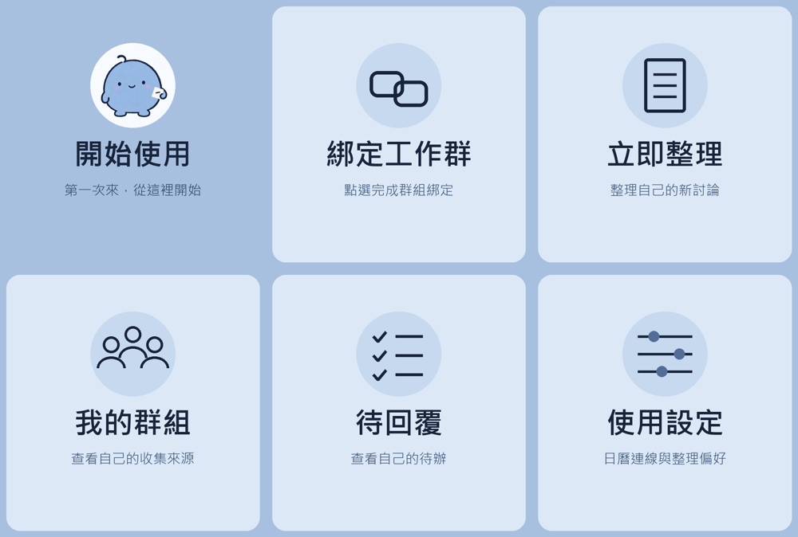

看懂討論
重點、決定、還沒確認的事分清楚，不把所有訊息都硬塞成待辦。
LINE WORK ELF · 目前免費試用
不用再從幾百則訊息找結論。小精靈把工作對話整理成重點、待回覆與下一步，讓你在自己的摘要網頁慢慢看。
不用填信用卡 · 每人獨立空間 · 日曆由本人授權
你的工作摘要
以下是合成示範
報名頁先用簡單表單。主視覺保留淡藍色，文案確認後再公開。
確認報名表需要哪些欄位
回覆設計夥伴：文案何時定稿
看見討論脈絡，再決定要不要行動。
不只抓日期，也看懂在聊什麼
重點、決定、還沒確認的事分清楚，不把所有訊息都硬塞成待辦。
點開完整摘要，搜尋文字、切換群組與貼上對話，長內容不用擠在聊天泡泡。
查看待回覆、保存記錄，再把確認好的安排放進自己的 Google Calendar。
從 LINE 開始，網頁接著看
在 LINE 按「立即整理」，就會收到個人摘要入口。整理完成後更新頁面，內容就在那裡。
預設不另外推播整篇結果；需要提醒的人，可以自行開啟短通知。閱讀網頁不會重複叫 AI，也不會增加 LINE 推播。
看完整操作教學 →
第一次使用
1 加好友並開通
2 邀請小精靈入群
3 由本人按鈕綁定
4 傳新訊息，整理並開啟網頁
群組成員需要先知道收集與 AI 分析用途。每位想收到自己整理結果的人，都要各自開通與綁定。
資料各自整理，範圍說清楚
每人有自己的資料庫、來源、待辦與日曆授權。管理者仍能管理本機檔案，不是端對端加密。
只收已加入且綁定後的新文字。雙人對話需要你主動提供；目前不直接解析圖片、附件與語音。
摘要連結十分鐘內可開啟一次，閱讀三十分鐘後到期。持有連結的人能看內容，請勿轉傳。
現在免費試用，沒有付款或自動續訂。個人與全站用量有限，服務仍受連線與第三方配額影響。
加好友，從這裡開始